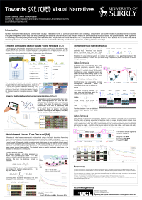
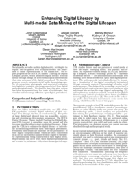
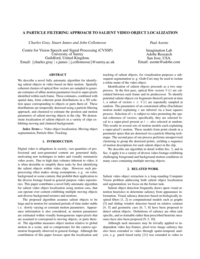
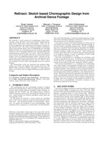
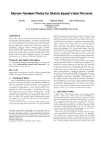
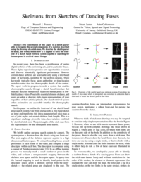
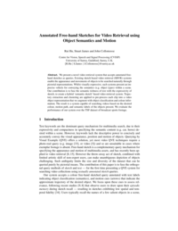
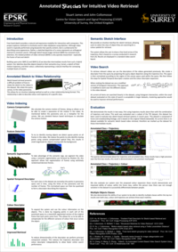

Publications
-
2016

Evolutionary Data Purification for Social Media Classification
Stuart James, John Collomosse
International Conference on Pattern Recognition (ICPR'16) | Cancun, Mexico
-

Towards Sketched Visual Narratives for Retrieval
Stuart James
SketchX - Human Sketch Analysis and its Applications | London, UK
-
2015
Visual Narratives: Free-hand Sketch for Visual Search and Navigation of Video
Stuart James
PhD Thesis | University of Surrey, Guildford, UK
-
2014
Enhanced Digital Literacy by Multi-modal Data Mining of the Digital Lifespan
John Collomosse, Stuart James, Abigail Durrant, Diego Trujillo-Pisanty, Wendy Moncur, Kathryn Orzech, Sarah Martindale, Mike Chantler.
DE2015 | London, UK
-

Particle Filtering approach to salient video object localization
C Gray, S James, J Collomosse and P Asente
ICIP'14 | Switzerland
-

ReEnact Sketch based Choreographic Design from Archival Dance Footage
S James, M Fonseca and J Collomosse
ACM International Conference on Multimedia Retrieval (ICMR'14) | Glasgow, UK
-
Admixed Portrait Design Intervention to Prompt Reflection on Being Online as a New Parent
D Trujillo-Pisanty, A Durrant, S Martindale, S James, J Collomosse
ACM DIS'14 |
-
2013
Markov Random Fields for Sketch based Video Retrieval
R Hu, S James, T Wang and J Collomosse
ACM International Conference on Multimedia Retrieval (ICMR'13) |
-
2012
Skeletons from Sketches of Dancing Poses
M Fonseca, S James and J Collomosse
IEEE VL/HCC'12 |
-

Annotated Free-hand Sketches for Video Retrieval using Object Semantics and Motion
R Hu, S James and J Collomosse
Springer ACM MultiMedia Modelling (MMM'12) |
-
2011
Annotated Sketches for Intuitive Video Retrieval
Stuart James and John Collomosse
BMVA / AVA Workshop on Biological and Machine Vision. Perception Journal | Cardiff, UK
-
2011
Sketched Visual Narratives for Content Based Video Retrieval
Stuart James
MPhil Transfer Report | University of Surrey, UK